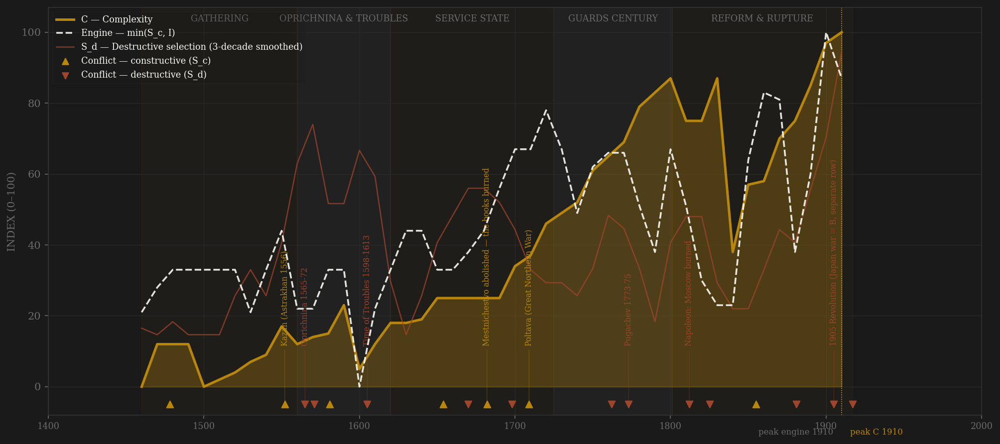
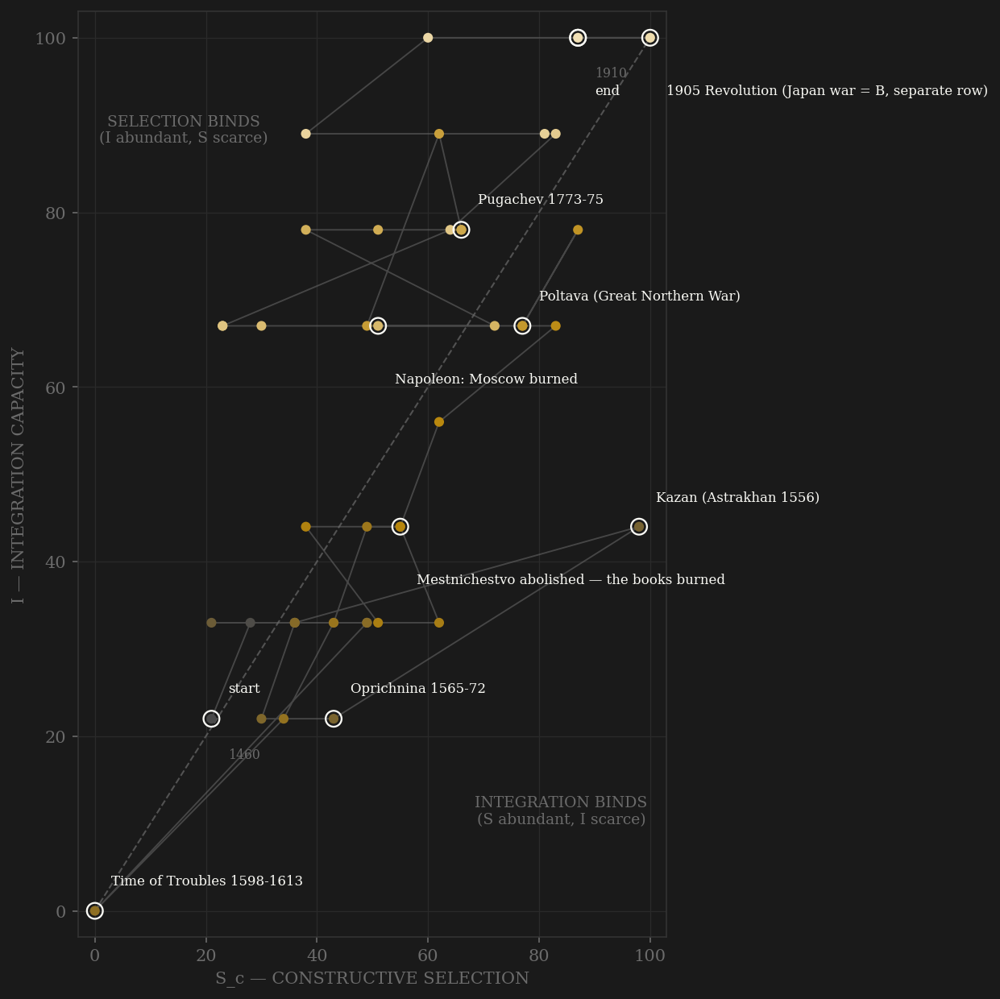

Russia is the roster's channel-A counter-arc to Poland-Lithuania, built in the same session as its mirror. Where the Commonwealth's within-rules contest rotted into anti-coordination, Muscovy's problem was a hereditary cap on merit — mestnichestvo, the precedence system under which command went by genealogical arithmetic — and the state's answer was the most dramatic channel-A reopening in the roster: in January 1682 the razryadnye precedence books were burned in the palace vestibule on the reform commission's petition, and forty years later the Table of Ranks made office manufacture the elite instead of birth capping the office. The engine's interior peaks land exactly on the three great reopenings — Petrine 1710s-20s, Great Reforms 1860s, Duma-era 1900s — which is the coding seeing the history the narrative claims. But every reopening is bought with destructive selection at the apex: Peter kills his own heir and his 1722 succession decree hands the throne to whichever Guards regiment moves first — five coups from 1725 to 1801; the 1762 manifesto that frees the nobility from service is the rentier turn at the exact institutional joint (the Table's contest made optional for its winners), and Pugachev's serf war and the Charter of 1785 follow within a generation. The nineteenth century runs the cycle twice more: Speransky's exams, then the estate freeze; Emancipation, zemstvo, and the professional bar, then the counter-reforms shutting gymnasium doors to cooks' children by name — while the literary-scientific explosion detonates AFTER the Napoleonic S_d, and the build flags it rather than resolves it: annuity of the reformed ladder, or a bypass engine the state never controlled? By 1900-1910 every channel is at or near its maximum at once — professional society, Duma contest, the WWI peer war, Stolypin's ladder into the commune — and complexity, riding measured GDPpc, rail, and the two-capital scale, peaks on the terminal row. Engine and C are both still rising when February 1917 cuts the series: the lag reads +0, but that is a lower bound, not a measurement — the revolution right-censors the peak, exactly as 1914 right-censors Britain's.

The trajectory spends its first century in the lower-left, climbing slowly as the gathering builds integration faster than contest. The oprichnina is the sample's most violent interior excursion — selection machinery deliberately smashed by the sovereign, the path knocked toward the origin, and the Troubles then drive both axes nearly to zero: a near-death at the century mark. The recovery is C-led (the 1613 sobor carrying the whole polity), then A-led from 1682 — the path climbs the selection axis in the Petrine surge while enserfment holds integration below its potential: the state that opened the ladder for servitors closed the floor for peasants, and the phase portrait shows that bargain as a long diagonal ride below the frontier. The 1754 customs abolition and the rail arc pull integration up through the nineteenth century; 1861 lifts the negative-integration cap and the path accelerates up both axes at once. Like Britain, the series ends in the top-right corner still moving — Sc 87, I 100 on the terminal row — which is what right-censoring looks like in phase space: a trajectory amputated mid-climb, not a completed arc. The difference from Britain is what did the amputating: not an external war but the accumulated S_d bill — 1905 unpaid, 1917 collected.
Coded by locus and target, never by outcome. Russia's ledger is the locus rule's full stress test. The steppe and western frontier wars — Kazan, Astrakhan, Livonia, Smolensk 1632, the Thirteen Years' War, Poltava, the Turkish wars — are channel B: peer contests that disciplined the service state without touching its core. The exceptions cut both ways. The Time of Troubles brings the Polish garrison INTO the Kremlin 1610-12: core penetration, S_d — the exact mirror of the Poland page, where Klushino 1610 is the channel-B apex; one war, two loci, two pages built in the same session. Napoleon 1812 is S_d by the Alaric rule — Moscow burned — while the 1813-14 campaigns to Paris are B: the same war split by locus at the border. Crimea 1853-56 and Japan 1904-05 stay B by the Hannibal rule — Sevastopol and Tsushima are imperial periphery, the machinery intact and learning, and each defeat writes the next reform era. The internal series is the archetype collection: the oprichnina 1565-72, terror aimed by the sovereign at his own elite, with the Novgorod sack of 1570 as the purest self-wound in the roster (and its low-born promotions are NOT credited to channel A — entry via terror is the Rome novi-homines exclusion); the Schism from 1653, the state splitting its own church, bloodless-then-bloody like the Yuanyou blacklists; the streltsy purge of 1698, a sovereign destroying his own praetorians; the palace-coup century, succession-as-constitution at Guards-regiment amplitude; Pugachev 1773-75, aimed at the serf-service order itself; the Decembrists, the praetorian-intellectual elite in arms against the succession; and 1881, the reformer tsar killed by the generation his reforms educated — S_d aimed at the reform machinery, harvested as counter-reform.
| YEAR | CONFLICT | CODE | CODING RATIONALE |
|---|---|---|---|
| 1478 | Novgorod annexed (Ugra 1480) | Sc | Rival polity absorbed; Horde suzerainty ended — the gathering's peer contests; pomestie ladder built from the confiscations |
| 1552 | Kazan (Astrakhan 1556) | Sc | Peak steppe contest — the Volga corridor won by the reformed service army of the sobor decade |
| 1565 | Oprichnina 1565-72 | Sd | THE ARCHETYPE: the tsar's terror ON his own elite; Novgorod sacked by its own state 1570; Metropolitan Philip strangled |
| 1571 | Crimean burning of Moscow | Sd | Core penetration despite external origin (Alaric rule); Molodi 1572 the B-answer, separate ledger row not annotated |
| 1581 | Pskov withstands Batory | Sc | Frontier held, machinery intact — Hannibal rule; the Livonian quarter-century closes in disciplined defeat |
| 1605 | Time of Troubles 1598-1613 | Sd | Famine, pretenders, Tushino's cloned court, POLES IN THE KREMLIN 1610-12 — core penetration; mirror of Poland's channel-B apex |
| 1654 | Thirteen Years' War (Vilnius 1655) | Sc | The western contest decided at Andrusovo 1667 — Poland's S_d, Russia's B: the same mirror, reversed |
| 1670 | Razin rising | Sd | The Volga social war aimed at the boyar-serf order; Astrakhan a rebel republic |
| 1682 | Mestnichestvo abolished — the books burned | Sc | Channel-A reopening BY DECREE, the roster's most dramatic; Khovanshchina the same year is its S_d shadow (separate row) |
| 1698 | Streltsy revolt and purge | Sd | ~1,100 executed at Novodevichy — the sovereign destroys his own praetorians to clear ground for the new army |
| 1709 | Poltava (Great Northern War) | Sc | Peak peer contest: the Baltic decided; Nystad 1721 ratifies the empire the Table of Ranks will staff |
| 1762 | Peter III murdered; nobility freed from service | Sd | Third Guards coup; the same year's manifesto is the rentier turn — the Table's contest made optional for its winners |
| 1773 | Pugachev 1773-75 | Sd | The serf-Cossack war: Kazan burned, nobles hanged en masse — aimed at the serf-service order itself; Romanov internal maximum |
| 1812 | Napoleon: Moscow burned | Sd | Core penetration = S_d by the Alaric rule; the 1813-14 march to Paris is B — one war, split by locus |
| 1825 | Decembrists | Sd | The Guards rise against the succession itself — the praetorian-intellectual elite in arms; five hanged |
| 1855 | Crimean War (Sevastopol falls) | Sc | Imperial periphery, machinery intact and learning — Hannibal rule; the defeat writes the Great Reforms |
| 1881 | Alexander II assassinated | Sd | The reformer killed by the reform's children — S_d aimed at the reform machinery; counter-reforms are the harvest |
| 1905 | 1905 Revolution (Japan war = B, separate row) | Sd | Bloody Sunday, Moscow rising, courts-martial — the S_d bill presented; the Duma is its within-rules receipt |
| 1917 | February & October | Sd | TERMINAL: garrison mutiny, abdication, seizure of the state — right-censored; what follows is another polity's first row |
| COMPONENT | GRADE | BASIS |
|---|---|---|
| S_c — Constructive (v2 contestability) | ○ scholar-coded | A: pomestie ladder -> mestnichestvo cap -> 1682 abolition (books burned) -> Table of Ranks 1722 peak -> 1762/1785 rentier closure -> Speransky exams 1809 -> Great Reforms reopening -> 1880s re-closure vs intelligentsia bypass — coded 0-10 from Hellie 1971, Kollmann 1987, Hosking 1997, Pipes 1974 (0.40) · B: steppe/western peer wars locus-cleaned — Kazan, Livonia, Poltava, Turkish wars, Crimea, Japan = B; Troubles occupations + 1812 excised to S_d (0.30 HARD CAP) · C: sobor era 1549-1653, then silence; 1730 Conditions; 1767 Commission; Great Reforms debate; Duma 1906+ (0.30). Ledger: data/raw/russia/coding_ledger_v2.csv |
| S_c v1 (frozen comparator) | ○ synthesized | Channel B alone (external-war-only), min-maxed — the prior definition's operative content |
| S_d — Destructive | ○ scholar-coded | Oprichnina archetype, Troubles, Schism, streltsy purge, coup century, Pugachev, Decembrists, 1881, 1905, terminal 1917 — locus-and-target rule; per-decade rationales in the ledger |
| I — Integration | ○ scholar-coded | Yam roads, Belgorod line, Ulozhenie unification-by-enserfment (serfdom = NEGATIVE labor integration until 1861, capping the ordinal), internal customs abolished 1754, river->rail arc, Emancipation, gold standard 1897. CODED ONLY; rail km lives in C, not double-counted. Upgrade path: Mironov grain-price dispersion panel |
| C — Complexity | ◐ proxy + coded | Maddison GDPpc 1860-1913 + de Vries urbanization 1500-1800 + Moscow+SPb Bairoch/Chandler anchors (SPb 1700 basis-jump is real — a capital from nothing IS complexity) + rail km countable 1838-1913 (log10) + coded culture arc 0.5. 1810s-30s = coded-only gap, flagged. THE FLAG: the 19th-c. literary-scientific explosion post-dates the Napoleonic S_d — annuity or engine? Carried as an open question |
| E — Entropy | ◐ measured + coded | 0.4 measured ruble silver-content debasement (Mironov/GPIH, 169 obs 1535-1913, decade mean -dln grams) + 0.6 coded: Troubles famine, copper money 1656-63, assignat collapse to ~25 silver kopecks by 1812-15, Kankrin restoration, famine 1891-92 (~400-500k dead), war/revolution finance |
| R — Renewal | ○ anchors | Millions, Vodarsky/Mironov anchors 5.0 (1460) -> 170.9 (1913); border-basis expansions (Ukraine, partitions, Asia) flagged in R_notes, never read as pure demography |
46 decade rows 1460-1910 built straight-to-v2 by scripts/build_russia_sicre.py (channels 0.40/0.30/0.30, amendment defaults, no deviation); audit trail in components_audit.csv; Sc_v1_combat = channel B alone per the v2-build convention. Frozen-protocol lag under BOTH definitions: v2 engine 1910 -> C 1910 = +0; v1 engine 1910 -> C 1910 = +0 (unsmoothed both 1900 -> 1910 = +10) — but the verdict of record is >= 0 RIGHT-CENSORED (stats_override, British precedent): engine and C are both still rising on the terminal row; the observed window never contains the turn, and a SIMULTANEOUS verdict would misread an amputation as a co-peak. Definitions agree because the terminal decade floods every channel at once (Tokugawa precedent). Interior v2 engine peaks — 1900s-1910s > 1860s > 1710s-20s — land on the Duma era, the Great Reforms, and the Petrine surge respectively: the three channel-A reopenings the page showcases (mestnichestvo books burned 1682; Table of Ranks 1722; Emancipation-era ladders 1860s). Oprichnina promotions excluded from channel A (Rome novi-homines rule: entry via terror is not contest). The ○ scholar-coded halo caveat applies; C's terminal peak rests partly on measured strands (Maddison, rail, city scale) which harden it. Right-censored at 1910 (row covers to 1917); no Soviet rows. Rebuild: ~/grove/venv/bin/python ~/vitalic.stoicism/scripts/build_russia_sicre.py, then polity_report.py --slug russia